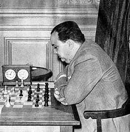
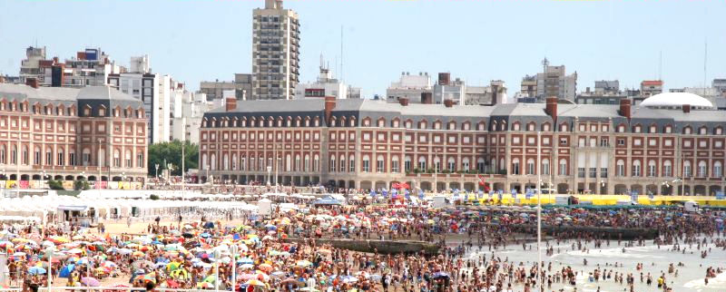
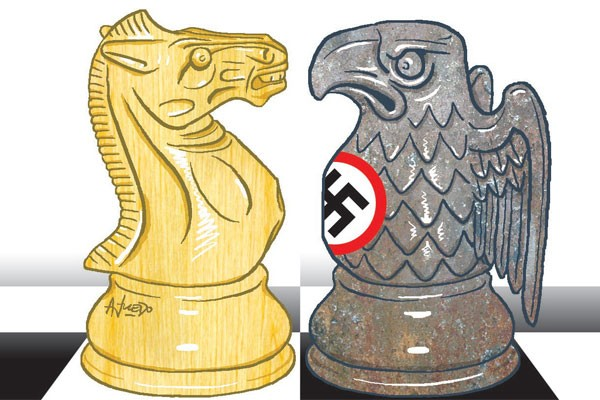
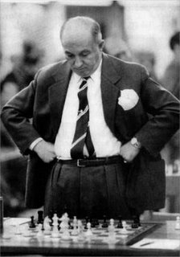
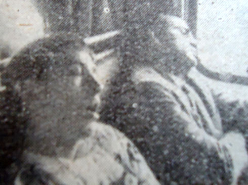

| MAR DEL PLATA AND BUENOS AIRES |
| Jan van Reek |
pgn Mar del Plata and Buenos Aires zip-file CBase Mar del Plata and Buenos Aires
31 Mar del Plata
and 20 Buenos Aires closed tournaments will be presented. These
classical events start with three South American championships
in Mar del Plata.
Argentine chess improved immensely, when
many players had to stay in Buenos Aires after the Olympiad, due
to the outbreak of World War II. Main immigrants were Najdorf,
Stahlberg and Eliskases. Strong international tournaments could
be organized. The new events helped them in their survival and
gave a fine training. Other European players joined them from
1947. Grandmasters such as Euwe, Szabo, O'Kelly and Pomar had a hard time
in Argentina. Gligoric was the first outsider who won. Oscar
Panno became the original Argentine top talent.
|  |  |
| Roberto Grau (1900 - 1944) | Casino Central in Mar del Plata has
been used
as a tournament hall from 1941 Later, the enormous Hotel Provincial was built next to it |
Often a handful of Europeans and Americans participated among a majority of South Americans in the Argentine international events. An exception was Buenos Aires 1960, when most players came from other continents. The four Clarin tournaments happened after the second Olympiad, Buenos Aires 1978. These events revived the participation by mostly foreigners. That had become usual internationally. World champion Karpov had little success in the third and fourth Clarin event. A long period of economic depression followed after Mar del Plata 1982.
When no international tournaments were organised in Argentina, the wealthy Najdorf stepped in. He started an annual series in April 1990. Najdorf Memorial 12 in 2001 became the last closed international event. The rise and fall of Argentine chess coincided with the later life of Najdorf.
|  |  |  |
| The chess battle in World War II | Miguel Najdorf (1910-1997) | Fischer and Bazan travel by train in 1960 |
Winners of the closed international tournaments in Mar del Plata and Buenos Aires
|
Mar del Plata 1928: Grau Mar del Plata 1934: Schwartzman Mar del Plata 1936: Pleci Buenos Aires 1939: Keres and Najdorf Mar del Plata 1941: Stahlberg Buenos Aires 1941: Stahlberg and Najdorf Mar del Plata 1942: Najdorf Mar del Plata 1943: Najdorf Mar del Plata 1944: Pilnik and Najdorf Mar del Plata 1945: Najdorf Buenos Aires 1945: Najdorf Mar del Plata 1946: Najdorf Mar del Plata 1947: Najdorf Buenos Aires/La Plata 1947: Stahlberg Mar del Plata 1948: Eliskases Buenos Aires/La Plata 1948: Najdorf Mar del Plata 1949: Rossetto |
Mar del Plata 1950: Gligoric Mar del Plata 1951: Julio Bolbochan and Eliskases Mar del Plata 1952: Julio Bolbochan and Rossetto Mar del Plata 1953: Gligoric Mar del Plata/Buenos Aires 1954: Panno Mar del Plata 1955: Ivkov Buenos Aires 1955: Ivkov Mar del Plata 1956: Julio Bolbochan and Najdorf Mar del Plata 1957: Keres Mar del Plata 1958: Larsen Mar del Plata 1959: Pachman and Najdorf Mar del Plata 1960: Spassky and Fischer Buenos Aires 1960: Kortschnoj and Reshevsky Mar del Plata 1961: Najdorf Mar del Plata 1962: Polugaevsky Buenos Aires 1964: Petrosian and Keres Mar del Plata 1965: Najdorf |
Mar del Plata 1966: Smyslov Mar del Plata 1969: Panno and Najdorf Buenos Aires 1970: Fischer Mar del Plata 1971: Polugaevsky Mar del Plata 1976: Brond and Sanguineti Buenos Aires 1978 (Clarin): Andersson Buenos Aires 1979: Kortschnoj and Ljubojevic Buenos Aires 1979 (Clarin): Larsen Buenos Aires 1980 (Clarin): Larsen Mar del Plata 1982 (Clarin): Timman Buenos Aires 1990: Smyslov and Fernandez G. Buenos Aires 1991: Tal, Nogueiras and Granda Z. Buenos Aires 1993: Kamsky and Shirov Buenos Aires 1995: Van Wely and San Segundo Buenos Aires 1996: Tiviakov and Magem Badals Buenos Aires 2000: Judit Polgar and Bologan Buenos Aires 2001: Karpov |
 |
Go to home page |